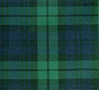
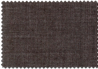

Design Awareness
By Mark Seymour
Coloring isn't just for kids
Color is ubiquitous, except to the color blind. We think nothing of describing someone as red haired with blue eyes, wearing a green sweater and a brown skirt, carrying a black handbag and a bright yellow umbrella. (If you recognize yourself, send me an email, okay?)Yet color, in the publishing world, is a recent invention. Or, perhaps, reinvention. Remember the Lindisfarne gospel from my September column, illuminated in 715?

That was colorful. Yet, when we went from illuminated manuscripts, done by hand, to the pages of Gutenberg's Bible, printed using a press in 1454, the palette changed to black and white:

And printing stayed pretty much that way for the next five hundred years. Not totally, but the vast majority of it. Color was hard to do, and color was expensive. Newspapers, except for the Sunday funnies, were black and white until very recently; the change has not necessarily improved the journalism, but their audience has come to expect it. Books have stayed black and white, except for picture books, but magazines made the leap to color beginning in the 1960s. (Those of us with a few years under our belts can remember when Time magazine first began printing photographs in color; it was a shock.) Black and white is a misnomer for photographs, of course; while images were created using pure black and white line engravings in newspapers and magazines through the Civil War, the use of gray scale photographs had taken hold throughout the printing world by the early part of the 1900s.
Even electronic media, until very recently, was black and white. Television, of course, was universally gray-scale until the 1970s, and I only bought my first color set in the 1980s. But my first Macintosh had a black and white screen (imagine the limitations of using MacPaint in the late 1980s, where your choices were a solid black pixel or a solid white one), as did my second one. My third one had a single-page monitor that displayed 256 grays (whee!); color monitors were more expensive, and were smaller.
Today, of course, we think nothing of producing websites and graphics on a 30-inch flat screen monitor displaying millions of colors. (Well, some people; the Linux Gazette doesn't pay that well.) Personal color laser printers are under a thousand dollars, most large offices have color printers and even color copiers, and there's usually a Kinko's nearby... Digital color has become standard in the printing industry, and even cellular telephones and iPods now come with screens capable of displaying color photographs and real-time video.
But the new availability of color in the design world means that we must learn to think in color. Not just in the dry mathematics of PMS numbers and RGB or CMYK percentages, either; they are merely how you create the illusion of color. Thinking in color gives you the ability to create more than just pretty images or easier data structures because, as that blue-eyed redhead indicated, color is evocative. A picture of her, with her coordinated clothes and accessories, resonated in our minds, even though I only described her rather than showing you an image, because those colors have meaning.
New cars are always displayed in a narrow palette; when was the last time you saw a commercial with a purple car in it, or even a green one? Traffic signals don't have a blue light in them, though police cars do the world over. These things are so because it matters. We may not be aware of the choices made, but we would be instantly aware if different choices were ever implemented; imagine your confusion over fire engines painted dark brown, or a blinking fuschia light at the street corner next to the bright green triangular sign.
When we were kids, nurses and doctors wore white, police uniforms were blue, and soldiers dressed in green. Not any more, however. Now everyone shows up in different colors, sometimes many colors at the same time; the latest camouflage for the military was not only created using computers, its patterns are printed on the cloth using large pixel-shaped blocks.
Don't think that color is universal, either. Red, because of its link to fire, is pretty much read as 'danger' the world over, but you can't always count on that. Taxis are often yellow throughout the United States, some still with the traditional black and white checkerboard pattern running down the side, but not in the rest of the world. Even fire trucks sometimes show up in white and green, along with the 'normal' red. Police cars used to be black and white, but now they come in every color imaginable, often based on the colors of the logos of the towns they represent.
If you're designing for the world market, you need to be aware of all these visual 'standards', and other cultural differences as well. In Japan, for instance, white is the color of mourning, not black. Even something as seemingly all-American as the good old Red, White, and Blue can be a dangerous design assumption:
While those three colors (ah, but which three colors is important— the 'National Blue' used in the US flag is a particular blue, officially referred to as Old Glory Blue) show up in advertising, on promotional materials, and on bunting and flags every Fourth of July, representing the United States, they mean other things to other people. Red, white, and blue can equally describe the flags of nearly forty other countries, some familiar and some not, including Belize, Burma, Chile, Cuba, the Dominican Republic, France, Haiti, Iceland, both Koreas, Liberia, Luxembourg, the Netherlands, Norway, Panama, the Phillipines, Russia, Samoa, Serbia, Taiwan, Thailand, the United Kingdom, and even Texas.
As our redhead's ensemble proved, choosing the right colors is crucial. If you design a new logo for someone, the first question (after how much will it cost?) is: what color is it? We describe many emotional or physical states just by referring to their color: a blue mood, red with anger, green with envy, cowards are yellow, white with fear.
In Western cultures, jarring juxtapositions of color is rarely acceptable (the 1960s and its throwbacks are rare exceptions), while in Japan the more bizarre (by European standards) the combination, the better. While it may be hard to correlate cultures by their color choices, color choices can evoke culture:
Scottish tartans are designed one way: 
Japanese kimono appear very different:
Italian suits look another way entirely: 
Your choice of colors can create (or destroy) a mood, set a style, evoke a place or a time period or an artistic or design movement (Art Nouveaux will require a different palette than Art Deco or Pop Art), and even determine the emotional response of your audience.
Color ways (discrete color choices for a particular project) in cool colors can evoke Northern or alpine scenes:
The same color way, shifted toward the green, can evoke the tropics:
Shifted toward orange and brown, it evokes the Southwest:
Color can be tricky, especially as you navigate the differences between printed color and computer color. For color work on the computer, I rely on the color card created by VisiBone (as I did to select the above color ways), and highly recommend it. The card shows the relationship between the 216 commonly-supported web colors, grouped by hue.
[ For those who do web design, this bookmarklet will generate the 216-color card right in your browser. I find it invaluable in my own work. -- Ben ]
For printed color description tools, of course, nothing beats Pantone, though Toyo inks have made significant inroads, and the new six-, seven-, and even eight-color printing systems are worth checking out.
There are many color description systems, but here are some basic terms:
- Hue; a distinct part of the spectrum (red, blue, purple)
- Saturation; how much gray is present
- Value; relative brightness or darkness
- RGB Red, Green, Blue; primary colors in the additive model
- CMYK Cyan, Magenta, Yellow, Black; primary colors in the printer's subtractive model, with black added to sharpen the image
- Primary; three defining colors in a color wheel
- Secondary; colors created by blending two primary colors
- Tertiary; colors created by blending the three primaries and three secondaries
- Complementary; colors at opposite sides of the color wheel
- Triad; set of three colors equidistant around the color wheel
- Analogous; colors next to each other on the color wheel
Here are some sites where you can explore color theory and color management terminology:
http://www.adobe.com/support/techdocs/320624.html
http://www.colorsystem.com/
http://www.commarts.com/CA/feadesign/color4x/01_colorx.html
http://www.worqx.com/color/
http://www.gretagmacbeth.com/index/products/products_color-standards.htm
http://kiptron.psyc.virginia.edu/steve_boker/ColorVision2/node16.html (the Munsell color system)
http://www.anthus.com/Colors/NBS.html (color definitions using words)
http://www.w3.org/Graphics/Color/sRGB (definition of sRGB)
http://www.ledet.com/margulis/How_CM_Failed.pdf (an older article on color management and the problems of implementing it, but still of interest)
http://www.drycreekphoto.com/Learn/color_spaces.htm
http://www.ncscolor.com/webbizz/mainPage/default.asp
http://dx.sheridan.com/advisor/cmyk_color.html
http://www.photomigrations.com/articles/0409400.htm
http://www.devx.com/projectcool/Article/19954/0/page/3
http://www.techexchange.com/thelibrary/ColorGamut.html
http://www.udel.edu/cookbook/scan-print/gamut.html
http://209.196.177.41/10/10-01.htm (simple color definitions)
http://www.large-format-printers.org (university research institute on big printers)
http://www.color-tec.com/1gloss.htm (color definitions)
Here are sites providing various tools or services for handling color:
http://www.chromix.com/colorthink/?PID=1.Gcct (a color management toolset composed of nine modules)
http://www.ccicolor.com/standards.html (color standard creator)
http://www.drycreekphoto.com/tools/printer_gamuts/ (printer, camera, and scanner color gamut comparisons)
http://www.kodak.com/US/en/digital/dlc/book3/chapter2/ (course on basic color theory and how color is represented and reproduced digitally)
http://www.color.org/(International Color Consortium)
Finally, an actual book on the subject: Real World Color Management by Bruce Fraser, Fred Bunting, and Chris Murphy, published by Peachpit Press in 2003. Highly recommended by those who know:
(click on the book for more information or to order it)
I started doing graphic design in junior high school, when it was still
the Dark Ages of technology. Bill Gates and Steve Jobs were both eleven
years old, and the state of the art was typing copy on Gestetner masters.
I've worked on every new technology since, but I still own an X-acto knife
and know how to use it.
I've been a freelancer, and worked in advertising agencies, printing
companies, publishing houses, and marketing organizations in major
corporations. I also did a dozen years [1985-1997] at Apple Computer; my
first Macintosh was a Lisa with an astounding 1MB of memory, and my current
one is a Cube with a flat screen.
I've had a website up since 1997, and created my latest one in 2004. I'm
still, painfully, learning how web design is different from, but not
necessarily better than, print.
![[BIO]](../gx/authors/seymour.jpg)